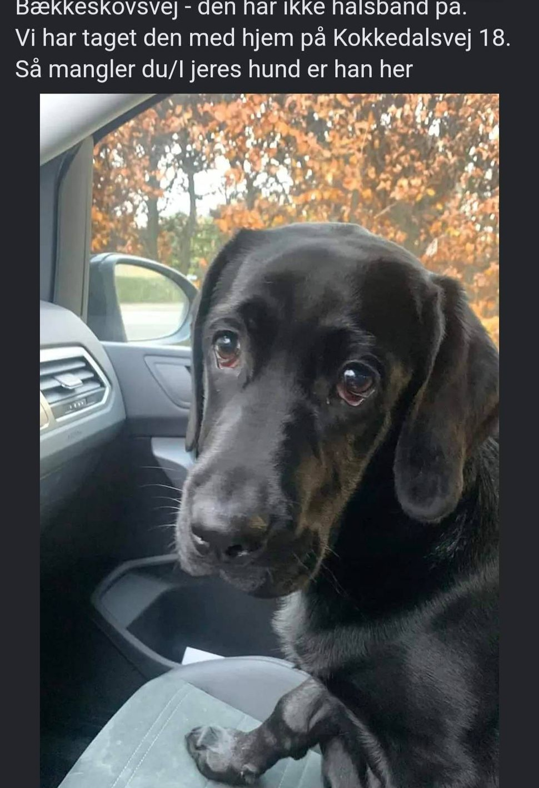

Indholdsfortegnelse:
Se eksempel på eksterne links med absolutte stier
Se eksempel på internt link med relativ sti
Se eksempel på anvendelse af billede som link
Links til mine top 3 film:
The Matrix
Harry Potter 2
E.T.
Link til min forrige opgave (3_html)
3_html
Min yndlings hunderace:
